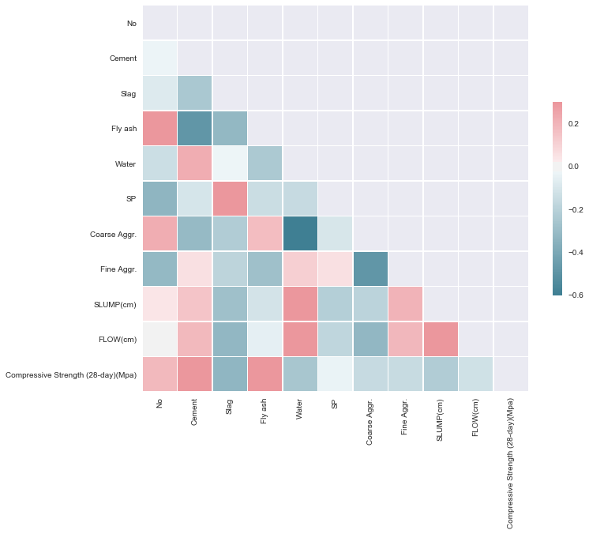
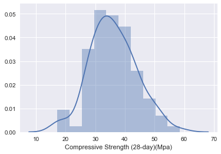
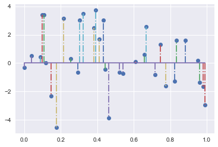

A multi parameter linear regression model developed to predict the compressive strength of concrete based on the quantities of the concrete mixture cement, slag, fly ash, water, SP, coarse aggregate and fine aggregate. The unhardened concrete characteristics of slump and flow are also used to estimate the concrete strength.
In [1]:
%matplotlib inline
import pandas as pd
import math as mat
import numpy as np
import matplotlib.pyplot as plt
from sklearn import linear_model
from sklearn.metrics import r2_score
from sklearn import preprocessing
from sklearn.model_selection import train_test_split
import seaborn as sns
sns.set(color_codes=True)
In [2]:
# load the data for the concrete mixtures
data = pd.read_csv('../data/concrete.csv')
In [3]:
def normFeatures(df,colStart,colEnd):
# normalize the data of each column between the start and the end column
minMaxArr = preprocessing.minmax_scale(df.iloc[:,colStart:colEnd].values)
# add the scaled values in back into the original dataframe
tmp = pd.DataFrame(minMaxArr,columns=list(df)[colStart:colEnd])
tmp.head()
df = pd.concat([tmp,df.iloc[:,colEnd]],axis=1)
return df
In [4]:
# normalize the concrete mixture data except for the compressive strength
data = normFeatures(data,0,10)
data.head()
Out[4]:
| No | Cement | Slag | Fly ash | Water | SP | Coarse Aggr. | Fine Aggr. | SLUMP(cm) | FLOW(cm) | Compressive Strength (28-day)(Mpa) | |
|---|---|---|---|---|---|---|---|---|---|---|---|
| 0 | 0.000000 | 0.573840 | 0.424870 | 0.403846 | 0.6250 | 0.315068 | 0.573267 | 0.150727 | 0.793103 | 0.724138 | 34.99 |
| 1 | 0.009804 | 0.109705 | 0.772021 | 0.734615 | 0.2500 | 0.520548 | 0.394852 | 0.403213 | 0.000000 | 0.000000 | 41.14 |
| 2 | 0.019608 | 0.105485 | 0.766839 | 0.734615 | 0.2375 | 0.794521 | 0.386078 | 0.391737 | 0.034483 | 0.000000 | 41.81 |
| 3 | 0.029412 | 0.105485 | 0.766839 | 0.730769 | 0.2375 | 1.000000 | 0.380228 | 0.384086 | 0.103448 | 0.025862 | 42.08 |
| 4 | 0.039216 | 0.071730 | 0.580311 | 0.553846 | 0.7500 | 0.383562 | 0.628839 | 0.066565 | 0.689655 | 0.758621 | 26.82 |
In [5]:
#Compute the correlation matrix
corr = data.corr()
# Generate a mask for the upper triangle
mask = np.zeros_like(corr, dtype=np.bool)
mask[np.triu_indices_from(mask)] = True
# Set up the matplotlib figure
f, ax = plt.subplots(figsize=(11, 9))
# Generate a custom diverging colormap
cmap = sns.diverging_palette(220, 10, as_cmap=True)
# Draw the heatmap with the mask and correct aspect ratio
sns.heatmap(corr, mask=mask, cmap=cmap, vmax=.3, center=0,
square=True, linewidths=.5, cbar_kws={"shrink": .5})
Out[5]:
<matplotlib.axes._subplots.AxesSubplot at 0x11da62310>

The correlation matrix map show that the concrwete compressive strength is highly correlated the cement, slag, fly ash and water % of the concrete mixtures
In [6]:
# plot the distribution for the compressive strengths
sns.distplot(data['Compressive Strength (28-day)(Mpa)']);

In [7]:
# make an array for the target (X) and the labels (y)
y = data.as_matrix(columns=['Compressive Strength (28-day)(Mpa)'])
X = data.iloc[:,0:10].values
# split the data set into a training portion (66%) and a test portion (33%)
X_train, X_test, y_train, y_test = train_test_split(X, y, test_size=0.33, random_state=42)
In [8]:
# create a linear regression model
reg = linear_model.LinearRegression()
reg.fit(X_train,y_train)
# calculate the predicted values
pred = reg.predict(X_test)
# calculate the r2 value for the model
r2 = r2_score(y_test,pred)
r2
Out[8]:
0.92923790958169139
The model seems to be quite good since we have an r2 value of .92
In [9]:
import matplotlib.pyplot as plt
import numpy as np
diff = pred - y_test
plt.stem(X_test[:,0], diff, '-.')
plt.show()

In [ ]:
In [ ]: